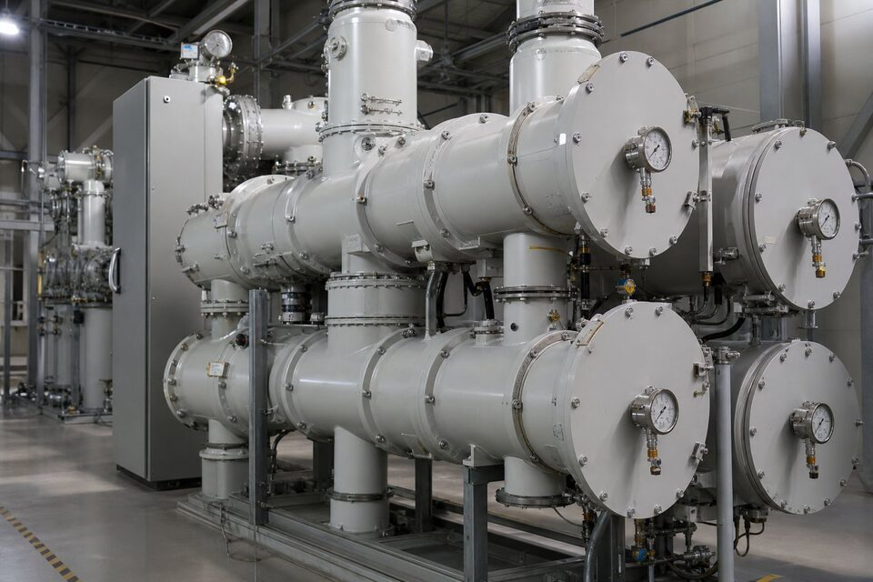

چرا گاز (SF6)؟
هگزافلوراید گوگرد گازی بیرنگ، بیبو و غیرقابل اشتعال است که قدرت دیالکتریک آن در فشارهای کاری رایج چند برابر هواست. این ویژگی دو نتیجه مهم دارد: اول اینکه فاصلههای عایقی بسیار کوچک میشوند و تجهیزات فشار قوی به جای ابعاد دهمتری، در محفظههای فشرده جا میگیرند؛ دوم اینکه در لحظه قطع، مولکولهای گاز قوس الکتریکی را به سرعت جذب و خنثی میکنند و مانع برقراری مجدد آن میشوند. به همین دلیل این گاز هم نقش عایق و هم نقش محیط خاموشکننده قوس را ایفا میکند و در کلیدهای قدرت، باسبارها و ترانسفورماتورهای ابزار فشار قوی به کار میرود. پایداری شیمیایی بالا نیز عمر طولانی گاز را در محفظههای بسته تضمین میکند.

پست عایق گازی (GIS)
در پستهای (GIS)، کل اجزای یک پست فشار قوی شامل باسبار، کلید قدرت، سکسیونر، ترانسفورماتورهای ابزار و برقگیر در محفظههای فلزی پر از گاز عایق قرار میگیرند. نتیجه، پستی است که تا یکدهم پست هوایی معادل فضا اشغال میکند و در برابر آلودگی، رطوبت و گرد و غبار محیطی محافظت شده است. این ویژگی، (GIS) را برای پستهای داخل شهر، واحدهای صنعتی در مناطق شرجی یا آلوده و پستهای زیرزمینی به گزینه اصلی تبدیل کرده است. در مقابل، هزینه اولیه بالاتر، نیاز به تخصص خاص برای نصب و اهمیت مدیریت نشتی گاز، الزاماتی هستند که در تصمیمگیری باید وزن داده شوند. برای واحدهای صنعتی بزرگ با محدودیت زمین، مقایسه اقتصادی کل هزینه مالکیت معمولا به نفع پست گازی تمام میشود.
فناوری قطع قوس در کلید قدرت
در کلید قدرت گازی، هنگام باز شدن کنتاکتها قوس تشکیل میشود و گاز تحت فشار از طریق نازل به سمت قوس دمیده میشود؛ این دمش، ستون قوس را خنک کرده و در عبور جریان از صفر، قوس خاموش میشود. طراحیهای مدرن از مکانیزمهای پرفشار استفاده میکنند که انرژی لازم برای قطع سریع را با فنرهای شارژشده یا هیدرولیک تامین میکنند. شاخصهای عملکردی مهم در این کلیدها، زمان قطع، تعداد سیکلهای قطع بدون نیاز به بازرسی و قابلیت اطمینان مکانیزم است. در پستهای حساس، قابلیت قطع خطا در شرایط نامتقارن و اضافه ولتاژهای ناشی از کلیدزنی نیز در انتخاب مدل بررسی میشود.
مدیریت نشتی و الزامات زیستمحیطی
نقطه ضعف اصلی (SF6)، پتانسیل گرمایش جهانی بسیار بالای آن در صورت رهاسازی به جو است؛ به همین دلیل مقررات بینالمللی سختگیرانهای برای مدیریت این گاز وضع شده و در حال گسترش است. در عمل، بهرهبرداری حرفهای شامل پایش مداوم فشار در هر محفظه، بازرسی دورهای نشتی با آشکارسازهای اختصاصی، ثبت نرخ نشت و برنامهریزی برای بازپرکردن یا جایگزینی است. هنگام سرویس یا انتهای عمر تجهیز نیز گاز باید با تجهیزات مخصوص تخلیه و بازیافت شود نه اینکه تخلیه آزاد انجام گیرد. در استعلام تجهیزات جدید، نرخ نشت سالانه تضمینشده سازنده را بخواهید؛ این عدد مستقیما با هزینه نگهداری و الزامات قانونی آینده مرتبط است.
نکات نگهداری و استعلام
- پایش فشار گاز در هر محفظه و ثبت روند آن برای تشخیص نشتی زودهنگام.
- اندازهگیری رطوبت و کیفیت گاز در بازرسیهای دورهای.
- آزمون تایم کلید و مکانیزم مطابق برنامه سازنده.
- آموز پرسنل برای کار با گاز و تجهیزات بازپرکردن.
- بررسی آلترناتیوهای کماثر گلخانهای در پستهای جدید در صورت الزام پروژه.
برای استعلام تجهیزات گازی، ولتاژ نامی، جریان نامی و قطع، پیکربندی پست و شرایط محیطی را ارائه کنید و حتما شرایط خدمات پس از فروش شامل تامین گاز و آموزش پرسنل را بپرسید. در پروژههایی که الزامات زیستمحیطی سختگیرانه دارند، گزینههای جایگزین با گازهای کماثر یا عایقبندی جامد نیز از سازندگان خواسته شود تا مقایسه اقتصادی انجام گیرد.
جمعبندی
تجهیزات عایقگازی با (SF6) ستون اصلی پستهای فشار قوی فشرده هستند و برای واحدهای صنعتی با محدودیت فضا، انتخابی اثباتشده به شمار میروند. با پایش مداوم گاز، رعایت الزامات زیستمحیطی و انتخاب سازندهای با خدمات پشتیبانی قوی، این تجهیزات دههها سرویس قابل اتکا ارائه میدهند.
سوالات رایج
چرا گاز (SF6) در تجهیزات فشار قوی استفاده میشود؟
به دلیل قدرت دیالکتریک بسیار بالاتر از هوا و توانایی عالی در خاموش کردن قوس الکتریکی؛ با این گاز میتوان فاصلههای عایقی را به شدت کاهش داد و تجهیزات فشرده ساخت.
تجهیز (GIS) چیست؟
پست عایق گازی که در آن باسبارها، کلیدها و سکسیونرها در محفظههای فلزی پر از گاز عایق قرار میگیرند؛ راهحلی فشرده برای فضاهای محدود و محیطهای آلوده.
چالش زیستمحیطی (SF6) چیست؟
این گاز پتانسیل گرمایش جهانی بسیار بالایی دارد؛ بنابراین مدیریت نشتی، پایش فشار و بازیافت گاز در انتهای عمر تجهیز یک الزام حرفهای و قانونی در حال گسترش است.
نگهداری تجهیزات گازی شامل چه کارهایی است؟
پایش مداوم فشار گاز، بازرسی نشتی، اندازهگیری رطوبت و کیفیت گاز، آزمونهای تایم کلید و بازرسی مکانیزمها مطابق برنامه سازنده؛ بسیاری از این تجهیزها کمنگهداری طراحی شدهاند.
مطالب مرتبط
با ارائه تکخطی و مشخصات پست، تجهیزات فشار قوی از برندهای معتبر مطابق استاندارد پروژه عرضه میشود.
مشاهده صفحه محصول ← ثبت RFQ همین محصولتامین این تجهیزات را به پیشرو تجهیز فرتاک بسپارید
شرکت پیشرو تجهیز فرتاک تامینکننده تخصصی تجهیزات صنعتی برای پروژههای نفت، گاز، پتروشیمی، فولاد و نیروگاهی است. برای دریافت پیشنهاد فنی و قیمت، استعلام (RFQ) خود را ثبت کنید تا کارشناسان مهندسی فروش در کوتاهترین زمان پاسخ دهند.
- تامین برق صنعتیتجهیزات تابلو و حفاظتی
- تامین تجهیزات صنایع نفت و گازپکیج مواد مطابق وندورلیست